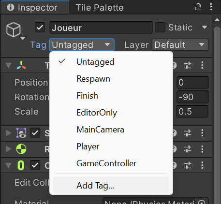
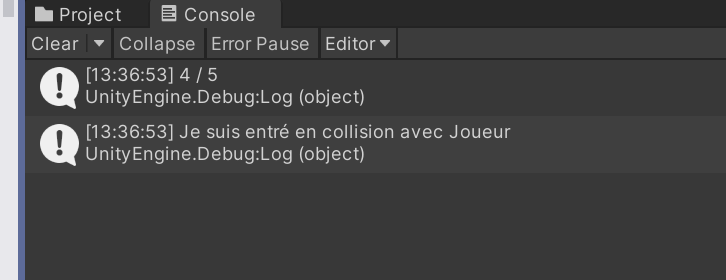
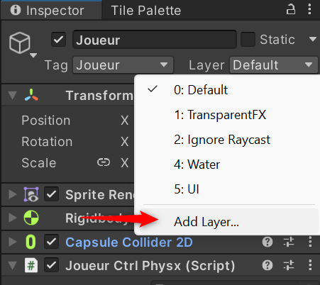
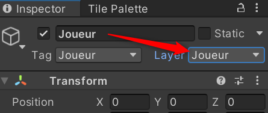
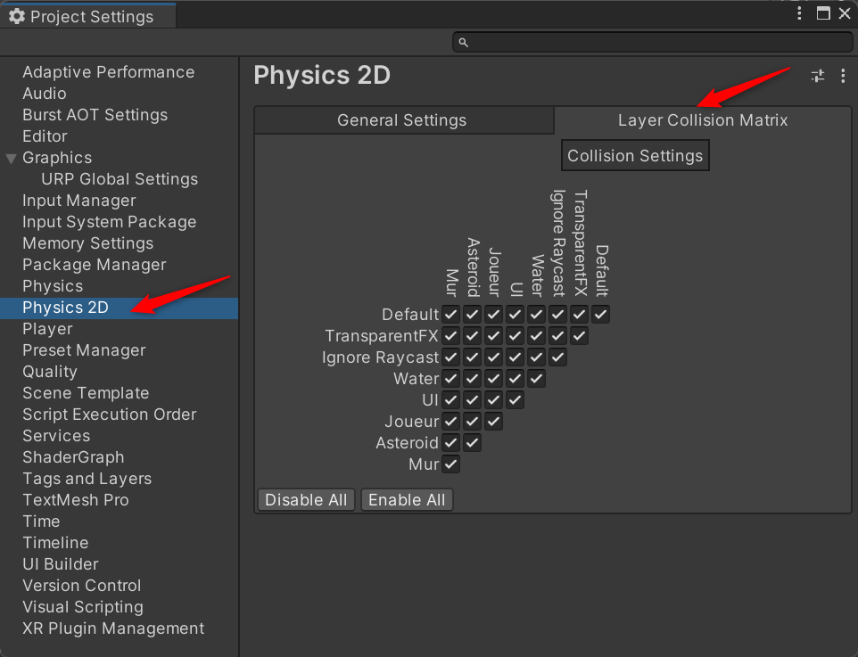
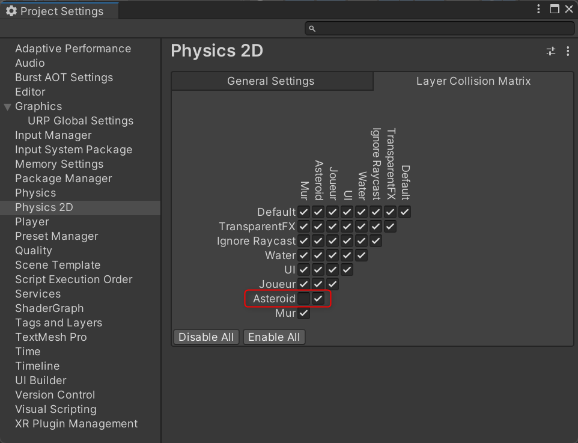
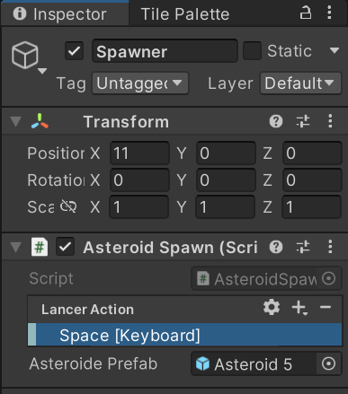

Physique 02 : Collisions et mécaniques
Élément de compétence ciblé
00SW - 4 : Programmer la logique du jeu ou de la simulation
Habiletés
- Programmer les comportements des éléments graphiques
- Utiliser les moteurs de jeu ou de simulation
Reprendre le projet
Le projet entammé dans la section Mouvement comporte le joueur et son déplacement, ainsi que la saisie des entrées de l'utilisateur. La section Physique 01 ajoute le lien avec le moteur de physique.
Cette section développe l'utilisation des calculs de physqiue, la saisie des intéractions et la programmation pour implémenter les mécaniques du jeu.
Commencer par ouvrir le projet existant.
Déplacer les astéroïdes
Il serait possible par programmation d'implémenter le déplacement des astéroïdes. Le code pour créer de toutes pièces un déplacement réaliste implique plusieurs calculs et de nombreuses lignes de code.
Le moteur de physique peut prendre en charge un objet et s'occuper du déplacement selon les paramètres initaux fournis. La méthode Update() devient inutile!
Cette technique utilise la méthode Awake(). Cette méthode est exécutée dès que le GameObject est initialisé, avant la méthode Start() qui s'exécute au premier rendu(frame) après l'instantiation.
En pratique
- Créer un nouveau script : AsteroidPhysx.
- Ajouter le nouveau script au prefab de l'astéroïde.
- Ouvrir le script dans l'éditeur de code.
- Effacer les méthodes
Start()etUpdate. - Ajouter l'attribut privé
Rigidbody2D rigidbody2d;. - Ajouter l'attribut publique
float vitesse;. Il permet d'ajuster la vitesse au niveau de l'éditeur et d'avoir un seul script pour plusieurs prefabs avec des vitesses différentes! - Ajouter la méthode
void Awake(). - Ajouter l'instruction pour récupérer la composante RigidBody2D du GameObject lié au script.
- Ajouter l'instruction
rigidbody2d.AddForce(Vector2.left * vitesse);.- AddForce propulse l'astéroïde selon un vecteur.
Vector2.leftest un vecteur de longueur 1 pointant vers la gauche de l'écran.- La vitesse multiplie le vecteur car la fore appliquée à l'astéroïde dépend de la longueur de ce vecteur.
- Tester la scène.
- Remarquer que l'astéroïde s'arrête dès qu'il entre en collision.
Scripter les collisions
Trois méthodes sont disponibles pour traiter la collision entre deux objets configurés pour le moteur de physique. Ce sont des méthodes qui traitent un événement comme les méthodes communes OnClick.
- OnCollisionEnter() : au premier contact entre les objets
- OnCollisionStay() : activé chaque frame où deux objets sont en contact
- OnCollisionExit() : lorsque les deux objets se séparent
Le paramètre reçu par cette méthode est une classe Collision2D. Elle donne accès aux information de l'autre objet en collision.
En pratique
- Ajouter la méthode
void OnCollisionEnter2D(Collision2D autreObjet). - Pour faire afficher à la console de débogage l'autre objet, ajouter l'instruction
Debug.Log(autreObjet.gameObject); - Pour détruire l'astéroïde ajouter l'instruction
Destroy(gameObject);. - RAPPEL : la propriété gameObject utilisée seule dans un script fait référence au GameObject attaché au script.
- Tester la scène et observer la console après une/des collisions.
Mécanique : durabilité du vaisseau
Pour motiver l'utilisateur à éviter les collisions avec les astéroïdes, chaque collision diminue la durabilité du vaisseau. Lorsque le vaisseau n'a plus de durabilité la partie est finie!
En pratique
- Ouvrir le script du joueur.
Préparer le système de durabilité
- Ajouter l'attribut maxDurabilite, modifiable dans l'inspecteur.
- Ajouter l'attribut durabilite. C'est la durabilité actuelle qui est traitée par le script.
- Initialiser l'attribut durabilite avec la valeur de maxDurabilite.
- Ajouter la méthode
void ChangerDurabilite(int modificateur) - Dans la méthode ChangerDurabilite ajouter l'instruction :
durabilite = Mathf.Clamp(durabilite + modificateur, 0, maxDurabilite); - L'instruction Clamp restreint la valeur du premier paramètre entre la valeur minimum (2ème paramètre) et la valeur maximum (3ème paramètre).
- Ajouter l'affichage à la console de durabilite / maxDurabilite quand la méthode est exécutée.
Interlude : les étiquettes (Tag)
Les objets du jeux n'entreront pas nécessairement en collision avec un seul autre type d'objet.
Unity offre le système d'étiquettes pour identifier facilement un groupe d'objets. Assigner une étiquette significative aux Prefabs (et/ou GameObjects) organise les ressources du jeu et optimise la programmation.
- Ouvrir l'éditeur de Prefab pour le joueur.
- Dans l'inspecteur, développer la liste déroulate de la propriété Tag.
- Choisir Add Tag.

- Ajouter l'étiquette Joueur puis l'assigner au Prefab du Joueur.
- Recommencer le processus pour les astéroïdes avec le tag Asteroid.
Gestion des points de durabilité
- Ouvrir le script de contrôle pour l'astéroïde.
- Repérer la méthode appelée lors de la collision.
-
Ajouter les instructions selon le pseudo-code suivant.
-
Si la collision est avec un objet étiqueté Joueur.
- Obtenir la composante nom du script (JoueurCtrlPhysx).
- Si la composante n'est pas null
- Appeler la méthode ChangerDurabilité avec -1 pour l'ajustement.
private void OnCollisionEnter2D(Collision2D autreObjet)
{
if (autreObjet.gameObject.tag == "Joueur")
{
JoueurCtrlPhysx joueurCtrlPhysx = autreObjet.gameObject.GetComponent<JoueurCtrlPhysx>();
if (joueurCtrlPhysx != null)
{
joueurCtrlPhysx.ChangerDurabilite(-1);
}
}
Debug.Log("Je suis entré en collision avec " + autreObjet.gameObject.tag);
Destroy(gameObject);
}
- Tester la scène et vérifier les messages à la console.

Mécanique : zone de jeu
En ajoutant des murs invisible, le joueur reste toujours dans la zone de jeu. Mais les astéroïdes aussi!
Les couches de collisions (Layers) résolvent ce problème. Elles regroupent les GameObjects pour les filtrer lors des collisions.
Pour garder le joueur dans la zone de jeu mais laisser passer les astéroïde, il faut que le joueur entre en collision avec les murs mais pas les astéroïdes.
En pratique
Créer les Layers de collision
- Ouvrir l'éditeur de Prefab pour le Joueur.
- Dans l'inspecteur, Développer le menu déroulant de la propriété Layer et choisir Add Layer....

- Choisir trois couches innoccupées et renommer les Joueur, Asteroid et Murs.
- Assigner les couches à leurs prefabs respectifs.

Configurer la matrice de collision des Layers
- Ouvrir les paramètres du projet Edit > Project Settings > Physics 2D.
- Sélectionner l'onglet Layer Collision Matrix

- Configurer la matrice pour que les astéroïdes ignorent les collisions avec les murs.

- Tester la schène.
Mécanique : Générer des astéroïdes
Présentement il n'y a qu'un seul ou quelques astéroïdes à l'écran. Pour représenter un champ d'astéroïdes il faut générer des instances de GameObject à droite de l'écran et ainsi créer l'illusion de mouvement.
En pratique
Préparer le générateur
Pour commencer et tester le générateur. Il lance un astéroïde lorsque la touche d'espacement (spacebar) est enfoncée.
Le script sera modifié à la fin des tests de lancement pour remplacer l'action par un chronomètre.
Un autre but couvert par la méthode de test : Instancier et manipuler un GameObject au moyen d'une interaction du clavier.
- Créer un GameObject vide en utilisant le menu contextuel dans la fenêtre de hiérarchie.
- Renommer l'objet AsteroidSpawn.
- Transformer AsteroidSpawn en Prefab
- Créer un script nommé AsteroidSpawn dans le dossier approprié.
- Ouvrir le script dans l'éditeur de Code.
- Ajouter la biliothèque InputSystem
using UnityEngine.InputSystem;. - Ajouter un attribut public pour l'interaction qui crée un astéroïde
public InputAction LancerAction; - Ajouter un attribut public du type GameObject pour recevoir la référence au prefab d'astéroïde.
- Ajouter la méthode
void LancerAsteroid(InputAction.CallbackContext context).- le paramètre context donne des informations par rapport à l'action détectée. Elles ne seront pas utilisées dans ce cas-ci.
- Ajouter à cette méthode l'instruction :
GameObject asteroidObject = Instantiate(asteroidePrefab, transform.position, Quaternion.identity);.- L'instruction instancie et garde une référence au nouvel astéroïde.
- Le premier paramètre lui fournit le prefab pour créer l'instance.
- Le second désigne la position à laquelle l'instance est créée.
- Le dernier utilise un objet Quaternion pour donner une rotation de 0 à l'instance. L'objet Quaternion est une construction mathématique représentanonion.identity représente une rotation de 0 degrés.
- Utiliser l'instruction GetComponent pour récupérer le script de l'astéroïde instancé précédement.
AsteroidPhysx asteroid = asteroidObject.GetComponent<AsteroidPhysx>();
- Appeler la méthode Lancer de l'astéroïde avec les paramètres pour qu'il se déplace vers la gauche de l'écran. La méthode Lancer n'existe pas encore. Il faut l'ajouter dans le script de contrôle pour les astéroïdes.
asteroid.Lancer(Vector2.left, 200);
Ajuster le script de l'astéroïde
Présentement, l'astéroïde est lancé dès sa création avec l'instruction
rigidbody2d.AddForce(Vector2.left * vitesse);
de la méthode Awake().
Il faut créer la méthode publique Lancer pour que le script du générateur puisse l'utiliser.
- Ouvrir le script de contrôle de l'astéroïde AsteroidPhysx
- Ajouter la méthode publique
Lancer(Vector2 direction, float velocite). - Transférer l'instruction qui applique une force de la méthode
Awake()à cette nouvelle méthode et utiliser les paramètres pour la compléter.
Configurer la touche de lancement
Le script du générateur est prêt à lancer des astéroïdes, il reste à configurer l'action et ajouter l'événement associé dans le script.
- Ouvrir l'éditeur de prefab pour le générateur.
- Dans l'inspecteur, assigner le prefab de l'astéroïde au champ Asteroid Prefab en le glissant à partir de l'explorateur de Projet.
- Configurer l'action pour le type Button (icône d'engrenage).
- Utiliser le bouton + de l'action pour ajouter une liaison (Binding).
- Configurer la liaison pour la touche d'espacement (spacebar).
 - Ouvrir le script du générateur - Dans la méthode Start activer l'action et ajouter l'événement pour la barre d'espacement.
lancerAction.Enable();
lancerAction.performed += LancerAsteroid;
- Tester la scène.
Compléter la génération d'astéroïdes
-
En utilisant la méthode Update et le délai depuis le dernier rendu, Time.deltaTime, modifier le générateur d'astéroïdes pour qu'il lance un objet toutes les delai secondes au lieu d'une action au clavier.
-
delai doit être disponible dans l'inspecteur du générateur et sa valeur par défaut est 3.
-
Ajouter un élément aléatoire à la hauteur de lancé pour l'astéroïde. Il doit toujours être dans la zone de jeu quand même.